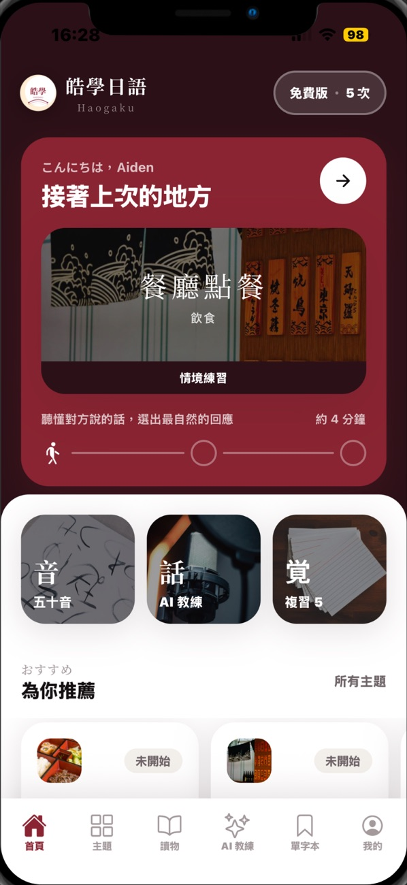
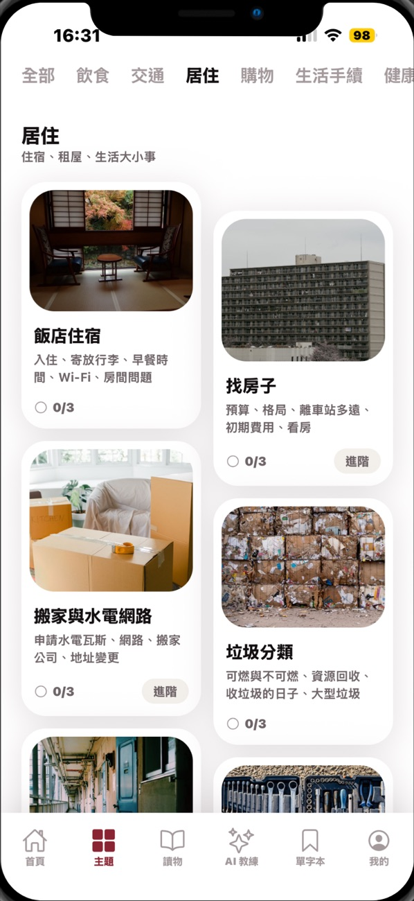
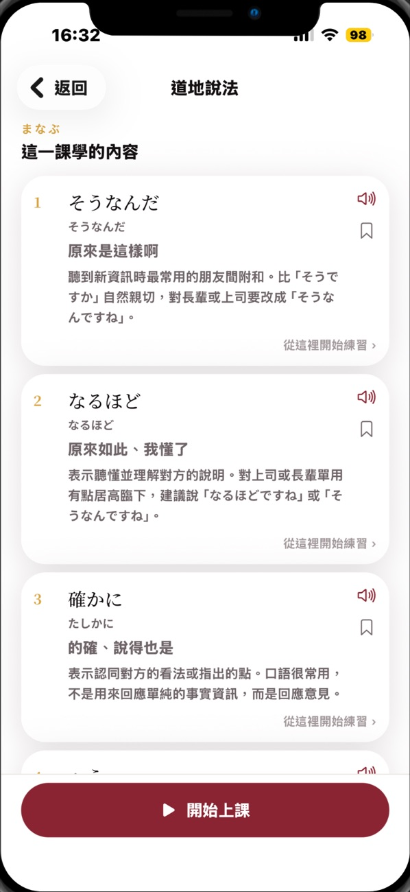
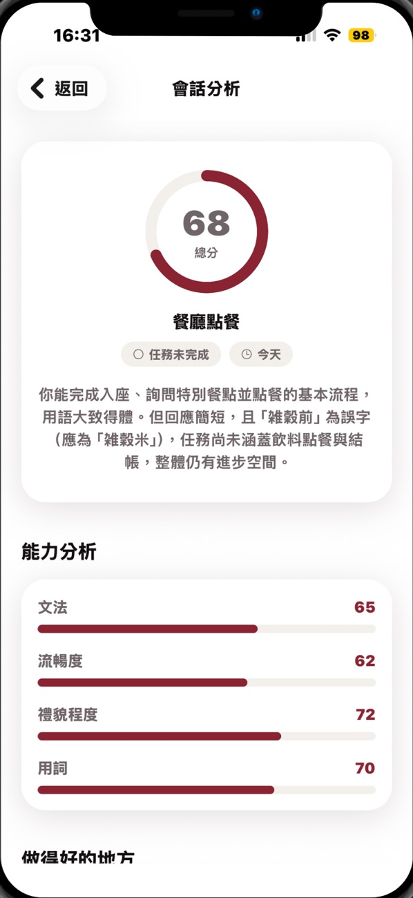
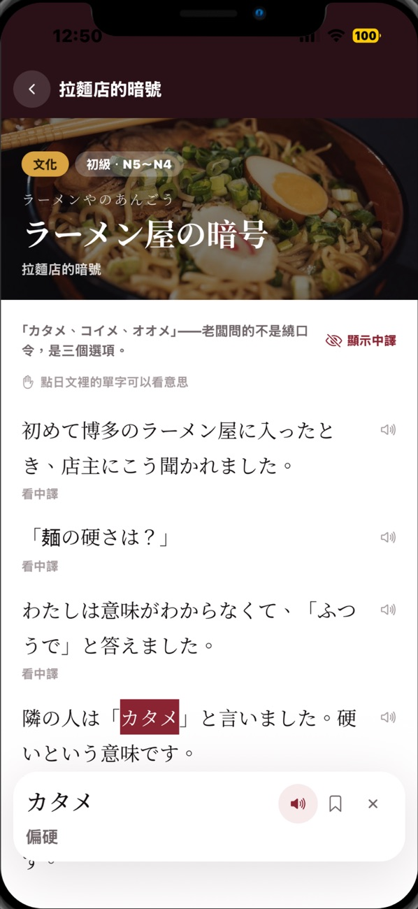
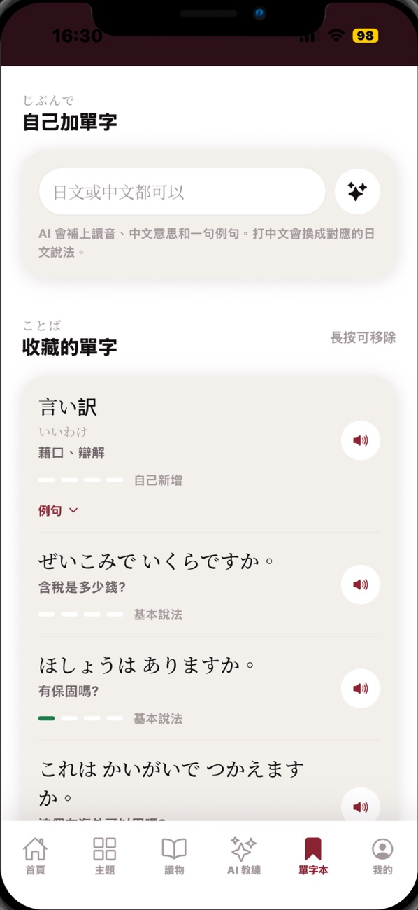
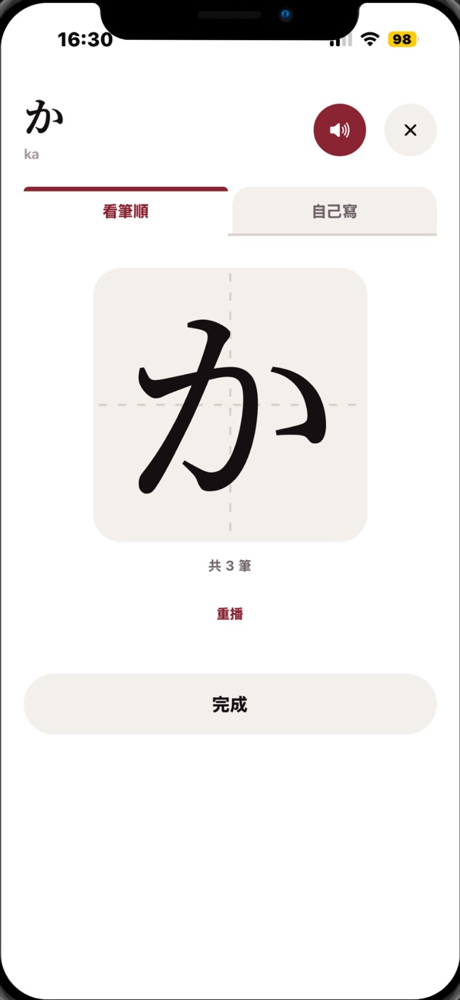
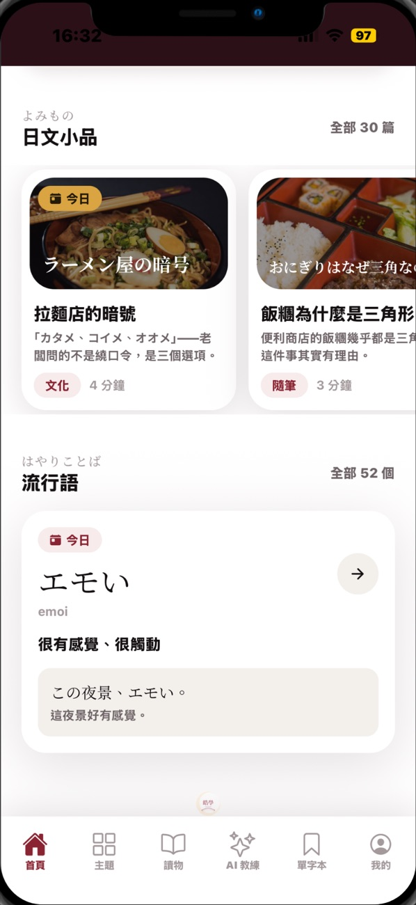

免費版
免費
先把課程學起來，AI 會話每天也能試幾句。
- 課程・讀物・五十音・單字本
- 全部
- AI 會話
- 每天 5 次
- 雲端朗讀
- 每月約 100 句
- 會話分析
- 每天 1 份
給台灣人的日語 App
日本で、ちゃんと使える日本語。
從便利商店結帳到職場敬語，83 個日本生活情境一次學會。想開口的時候，AI 日語教練隨時陪你練。
課程全部免費・目前支援 iPhone

不是照文法書的順序排，是照你在日本會遇到的場景排。要去旅遊就先學點餐和搭車，要打工度假就從租屋和面試開始。
在主題頁上方切換程度，內容就跟著變。同一個場景，初級先學會把話說出口，進階再學怎麼說得得體。

餐廳點餐、居酒屋、便利商店結帳
買票、轉車、問路、搭計程車
飯店入住、找房子、垃圾分類
問尺寸、免稅、退換貨
區役所、銀行、郵局
看病、藥局、緊急狀況
打工、面試、職場溝通
尊敬語、謙讓語、服務業敬語
自我介紹、邀約、婉拒
動漫、溫泉、演唱會
賞花、祭典、過年
開心、抱怨、安慰人
流行語、相槌、關西腔
從落地第一天到在日本上班，會遇到的場景都排好了。
先學會說，再學說得像日本人，接著聽懂對方，最後真的講一次。
這個場景一定會用到的句子，先把話說出口。
これをください。日本人實際會怎麼講，以及對誰可以這樣講。
これ、お願いします。聽懂對方說的話，選出最自然的回應。
「袋はご利用ですか？」AI 扮演店員、房東或面試官，跟你把整段對話走完。
いらっしゃいませ。
背了很多句子，站到櫃檯前還是說不出口？那就先在這裡講過一次。
教練會依照主題扮演情境裡的角色跟你對話。什麼時候想練都可以，一句話重講幾次也沒關係。
店員
你
店員
不是只給一個分數。報告會告訴你哪裡講得好、哪裡可以更好，還會把這場會話值得記下來的句子整理給你。

上課之外，還有讀的、背的、寫的。這些全部免費。

41 篇原創讀物，小說、隨筆、文化、時事四類。寫的是現代日本人會寫的文字，每天推薦一篇。

課程裡的單字一鍵收藏，App 照記憶曲線排複習時間。自己加單字也行，打中文也可以，AI 會補上讀音、意思和例句。

點了就唸。あ行有筆順和手寫練習，完全沒學過也能從這裡開始。

52 個日本年輕人真的在講的詞，每天輪一個，附例句和中文意思。
首頁的今日計畫會直接告訴你今天要做的三件事。做完就有 XP，越難的練習給得越多，從 Lv.1 一路升到 Lv.10。想跟別人比一比可以加入排行榜，不想比也完全沒關係。還有每日提醒，幫你記得今天還沒練。
付費買的只有 AI 會話和雲端語音的用量。想多練口說的時候再升級就好。
免費
先把課程學起來，AI 會話每天也能試幾句。
NT$150／月
適合每天輕鬆練習對話的人來增加語感
NT$350／月
適合想讓口說語感突飛猛進，提升自己的人
方案為月繳。實際價格以 App Store 顯示為準
下載免費，所有課程、讀物、五十音、單字複習和排行榜也都免費。付費方案買的只有 AI 會話和雲端語音的用量，免費版每天也有 5 次 AI 會話可以用。
從零開始到 N2 左右都適合。完全沒學過可以先從五十音表開始；初級課程對應 N5〜N4，進階課程對應 N3〜N2，在主題頁上方隨時可以切換。
目前先上 iOS，請用 iPhone 從 App Store 下載。
訂閱由 Apple 管理，請在 iPhone 的「設定 → Apple 帳號 → 訂閱」裡選擇皓學日語後取消。取消後當期仍可用到期末。提醒一下，刪除 App 並不會自動取消訂閱。
AI 會話會暫停到隔天，用量重新計算後就能繼續。語音朗讀會自動改用手機內建的語音，音質普通一些，但課程照樣可以學。
用得到。出發前挑飲食、交通、購物幾個主題，先學基本說法，再跟 AI 教練把點餐、問路走過一次，到了當地會比較敢開口。